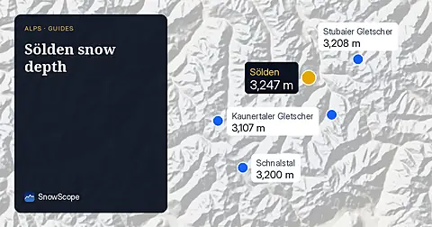

Zugspitze in December: Germany's glacier day vs Garmisch-Classic
Two ski areas share one mountain town. In our 46 winters of snow history the Zugspitze glacier plateau has 122 cm on a typical 15 December at 2627 m, while the Garmisch-Classic summit at 2047 m has 57 cm. The day tickets are almost the same price: EUR 70.50 and EUR 69 online.
See the live snow forecast for Zugspitze in the SnowScope appSnow depth, powder alerts and the 3D map, free.
Two ski areas, one December
Garmisch-Partenkirchen gives you a choice that few places have. Up high is the Zugspitze, Germany's only glacier ski area, reached by cable car or rack railway; the mapped area starts at the 995 m valley station and the runs lie on the plateau below the 2627 m top. Lower down is the Garmisch-Classic, 38 km of mapped runs from 727 m to 2047 m.
In December the question is simple: do you pay roughly the same money for sure snow up high, or for more runs on a thinner cover?


Snow at the same dates
At the top of the Zugspitze, all our winters had 30 cm or more in the week of 15-21 December, and 96 % had 60 cm or more in Christmas week. Even a thin year (1 winter in 10) has 62 cm up there on 15 December. Last winter had 80 cm.
The Garmisch-Classic is more mixed. Its top had 30 cm in that week in 89 % of winters, but its middle (1387 m) only in 48 %, and its bottom (727 m) almost never: a typical 15 December has 6 cm there. The Zugspitze valley station is no better at 12 cm; nobody skis down to it in December.
The price at the gate
On the official 2026-27 list the adult day ticket costs EUR 70.50 online for the Zugspitze, including the ride up, and EUR 69 online for the Garmisch-Classic. The official page notes that the ticket office price is higher than online. Neither area sells a 6-day pass on that list.
So December value here is about the day, not the week: buy online, choose the area by the snow, and keep both options open.
The pick for each skier
Beginners and families: the Zugspitze plateau, with gentle glacier runs and the best December snow in Germany, if the weather is clear. Strong skiers: the Garmisch-Classic top lifts once its middle has a cover, usually from late December. Everyone: on a storm day the plateau can close or be very cold, so watch the forecast and keep the lower area as plan B.
Tips for skiers
- Buy the day ticket online: it is cheaper than at the ticket office on the official list.
- In December ski the Zugspitze plateau and ride down by cable car or train; the valley is rarely white.
- Garmisch-Classic before Christmas: stay on the upper lifts; the middle had 30 cm in only about half of our winters in mid-December.
- Off-piste on the Zugspitze means glacier terrain: read the Bavarian avalanche report first.
More maps (external sites)
References and credits
- Zugspitze: official lift-pass prices (2026-27), checked 13 November 2026 zugspitze.de/prices
- Garmisch-Classic: official lift-pass prices (2026-27), checked 13 November 2026 zugspitze.de/prices
About these numbers
Snow numbers: SnowScope snow history, 46 past winters (1980-81 to 2025-26) at the resort's heights, corrected for height (an estimate for an area, not resort reports); 'good snow' = 30 cm or more on the ground as the week's average. Map: our typical depth on 15 December spread over the terrain by height. Runs and lifts: OpenSkiMap mapping. Lift-pass prices: the resorts' official price lists, checked on 13 November 2026; prices can change.
Official avalanche bulletins: Lawinenwarndienst Bayern
Cite this report
For research, teaching or the press: the numbers and charts are free to reuse under CC BY 4.0 with this citation.
SnowScope (2026), Zugspitze in December: Germany's glacier day vs Garmisch-Classic, https://snowscope.app/blog/en/2026/11/zugspitze-december-skiing-germany-glacier-price.html, accessed 2026-11-14
SnowScope (Atlas Labs). (2026, November 14). Zugspitze in December: Germany's glacier day vs Garmisch-Classic. SnowScope snow reports. https://snowscope.app/blog/en/2026/11/zugspitze-december-skiing-germany-glacier-price.html
BibTeX
@misc{snowscope2026zugspitzedecemberskiingg,
author = {{SnowScope (Atlas Labs)}},
title = {Zugspitze in December: Germany's glacier day vs Garmisch-Classic},
year = {2026},
month = nov,
howpublished = {\url{https://snowscope.app/blog/en/2026/11/zugspitze-december-skiing-germany-glacier-price.html}},
note = {Published 2026-11-14 13:29 UTC; accessed 2026-11-14}
}· CC BY 4.0 · Methods, data and tools →
Zugspitze: snow and temperature by height, this winter vs last (tools) →
Follow Zugspitze
Free: a message when fresh snow is coming, and the forecast every morning.
More snow reports

The Sillian (Hochpustertal) ski map with our snow layer on 13 November 2026: 8.6 cm on the top at 2399 m, bare lower slopes, and a week of mixed rain and snow with the snow line near 1,800 to 2,000 m.

Snow depth in Sölden on 13 November 2026: about 9 cm at the top (3245 m), 5 cm at mid-mountain, none in the valley at 1346 m. 25 cm forecast up high this week, rain below about 1620 m. Glacier vs village, with 46 past winters.

Silvretta Montafon snow conditions on 13 November 2026: 4.5 cm on the top at 2421 m, bare mid-mountain and valley, about 40 cm on the way up high this week while the valley gets rain below 1,500 m.